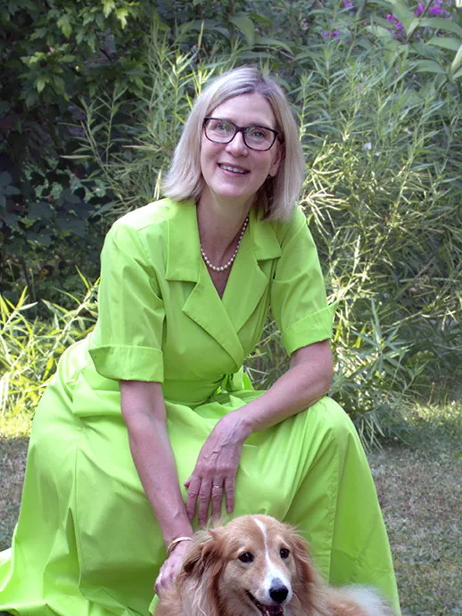

Pořadí na kandidátce 1Mgr. Anna Štůlová
Vystudovala jsem Střední zdravotnickou školu v Praze a v dospělosti obchodně právní vztahy na vysoké škole CEVRO Institut. Profesně se věnuji správě nemovitostí a v realitním oboru pracuji přes 30 let. Doplňuji si vzdělání a rozšiřuji dovednosti v oblasti mediace. O dění v obci se aktivně zajímám. Jsem členkou kontrolního výboru obce.
Více o kandidátce Skrýt profil
V Senohrabech jsem se s chutí zapojuji do místního společenského života. Již 23 let jsem členkou Tenisového klubu Hrušov, kde jsem řadu let působila ve výboru klubu, přispívala prací i sponzorsky k rozvoji areálu a zorganizovala řadu turnajů. Jsem dlouholetou členkou ODS a v místním sdružení ODS Senohraby zastávám funkci předsedkyně. V neposlední řadě jsem členkou spolku Kaple Senohraby a vznik místní kaple sv. Vojtěcha jsem s nadšením podporovala. Každoročně vypomáhám na Senohrabském pohádkování.
S manželem jsme vychovali dvě, dnes již dospělé, děti a nyní se těšíme z prvního vnoučka. Mám ráda zvířata; v našem domě s námi žije fenka Kora a pět koček. Ve volném čase ráda navštěvuji divadla a kulturní akce, cvičím jógu, čtu, cestuji a s manželem chodíme po Senohrabech a okolí, které považuji za jedno z nejmalebnějších míst, co znám.
V Senohrabech jsem před čtvrt stoletím našla přívětivý domov, krásné prostředí, dobrou občanskou vybavenost a hlavně milé a slušné sousedy. Ráda bych teď nabídla své služby obci a jejím obyvatelům. Od ukončení střední školy pracuji s lidmi a pro lidi, a vím, že je důležité občanům naslouchat, podporovat je a jejich problémy řešit. Své zkušenosti ze správy domů bych ráda uplatnila i při péči o obec. Nabízím organizační schopnosti, pečlivost a schopnost věcně a slušně komunikovat s lidmi.